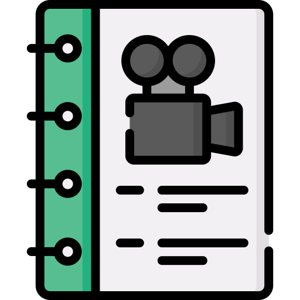

¿Cómo nos organizamos?
Volvemos a organizarnos por grupos de taller.
Volvemos a organizarnos por grupos de taller.
Una buena película tiene, sin duda, un buen guion. Y un buen vídeo, como el que tenéis que hacer, también debe ser así.
Por ello, os recomiendo que os detengáis un tiempo en la elaboración del guion de vuestro vídeo, y que no os pongáis a grabar sin ningún sentido. Si hacéis lo que os digo, obtendréis un resultado de buena calidad y ¡recordad!: tenéis que convencer a la Comisión de Selección del proyecto.
Echadle un vistazo a estos recursos, y os convertiréis en unos magníficos guionistas, paso necesario para elaborar un gran vídeo.
Tras un guion, es conveniente elaborar un storyboard, que puede ayudaros a ver cómo evolucionará en el tiempo vuestro vídeo. No os compliquéis en exceso (ya que el vídeo será corto, comparado con una película, por ejemplo) pero no dejéis de hacerlo.
Presta atención a los recursos que te encontrarás si haces clic sobre Lumen.
Busca un sitio tranquilo, donde no haya ruidos de fondo y haz todas las tomas que sean necesarias según el storyboard que has elaborado en el apartado anterior.
Si es necesario, repite cada toma dos o más veces, hasta que te asegures de que todo está bien.
Ahora, llega el momento de hacer el montaje del vídeo. Aunque hay muchas herramientas para ello (algunas incluso accesibles desde tu propio teléfono móvil, te recomiendo el uso de Clipchamp.
Si necesitas ayuda, pregúntale a Lumen.

 YouTube, Google Drive: elige el lugar para alojar tu vídeo.
YouTube, Google Drive: elige el lugar para alojar tu vídeo.
En todo caso, tendrás que obtener el código de inserción para usarlo en Blogger o el enlace para utilizarlo en Genial.ly
Cuando ya tengas tu vídeo alojado bien en Google Drive, bien en YouTube, llega el momento de incluirlo en el blog de actividades del Departamento.
Si no sabes cómo, pide ayuda a Lumen
Una vez que has terminado las actividades de este apartado, reflexiona sobre lo que has hecho. Te puedes preguntar:
Añade tus reflexiones al diario de taller, indicando lo que ha ido bien, los problemas que habéis tenido y las soluciones que les habéis dado.
No estaría de más que echaras un vistazo a la rúbrica de evaluación de vuestro vídeo. ¡Pregúntale a Clavis!
Obra publicada con Licencia Creative Commons Reconocimiento Compartir igual 4.0